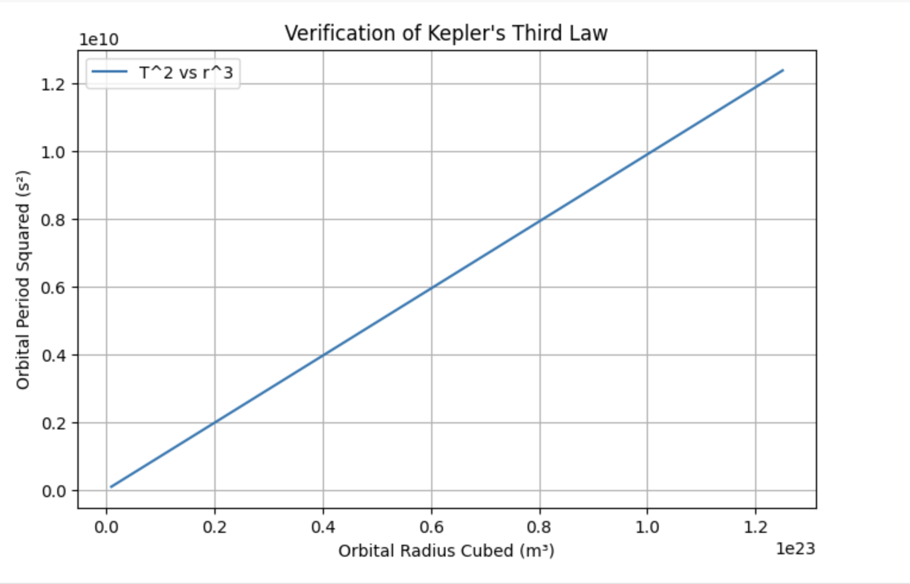

Problem 1
Orbital Period and Orbital Radius
Introduction
Kepler's Third Law states that the square of the orbital period (T) of a planet is proportional to the cube of its orbital radius (r). This relationship is fundamental in celestial mechanics and allows astronomers to determine planetary motions, calculate masses of celestial bodies, and estimate distances in space. The law is derived from Newton's Law of Gravitation and is widely applicable to satellites, planetary systems, and even galaxies.
Theory
For a body in a circular orbit around a massive central object, the gravitational force provides the necessary centripetal force:
Using Newton’s Law of Gravitation: [ \frac{G M m}{r^2} = \frac{m v^2}{r} ]
where: - \( G \) is the gravitational constant \( (6.674 \times 10^{-11} \text{ m}^3 \text{kg}^{-1} \text{s}^{-2}) \), - \( M \) is the mass of the central object, - \( m \) is the mass of the orbiting body, - \( r \) is the orbital radius, - \( v \) is the orbital velocity.
Since the velocity in a circular orbit is given by: [ v = \frac{2 \pi r}{T} ]
Substituting \( v \) and simplifying: [ \frac{G M}{r} = \left( \frac{2 \pi r}{T} \right)^2 ]
Rearranging: [ T^2 = \frac{4 \pi^2}{G M} r^3 ]
which shows that \( T^2 \propto r^3 \), confirming Kepler’s Third Law.
Implementation
A Python script can be used to verify this relationship by simulating circular orbits and plotting \( T^2 \) vs. \( r^3 \).
import numpy as np
import matplotlib.pyplot as plt
def orbital_period(radius, M, G=6.674e-11):
return 2 * np.pi * np.sqrt(radius**3 / (G * M))
# Parameters
M = 5.972e24 # Mass of Earth (kg)
radii = np.linspace(1e7, 5e7, 100) # Orbital radii in meters
T_values = orbital_period(radii, M)
# Squaring period and cubing radius
T_squared = T_values**2
r_cubed = radii**3
# Plot results
plt.figure(figsize=(8, 5))
plt.plot(r_cubed, T_squared, label='T^2 vs r^3')
plt.xlabel("Orbital Radius Cubed (m³)")
plt.ylabel("Orbital Period Squared (s²)")
plt.title("Verification of Kepler's Third Law")
plt.legend()
plt.grid()
plt.show()
Graphical verification of Kepler's Third Law
